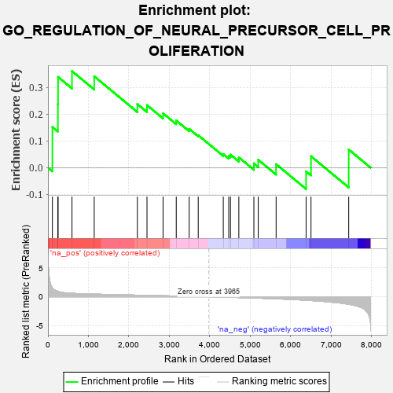
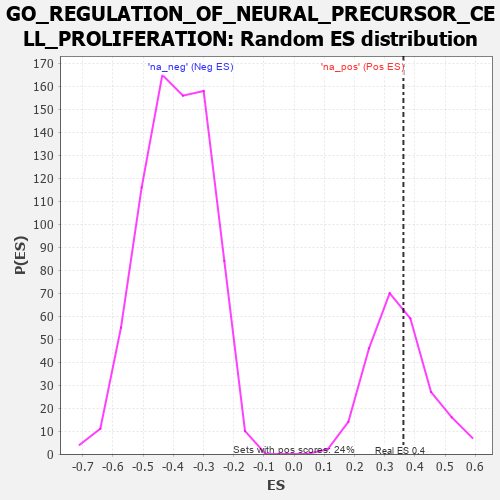

| | | Dataset | 7d |
| Phenotype | NoPhenotypeAvailable |
| Upregulated in class | na_pos |
| GeneSet | GO_REGULATION_OF_NEURAL_PRECURSOR_CELL_PROLIFERATION |
| Enrichment Score (ES) | 0.36170754 |
| Normalized Enrichment Score (NES) | 1.0386169 |
| Nominal p-value | 0.40248963 |
| FDR q-value | 0.6976221 |
| FWER p-Value | 1.0 |
Table: GSEA Results Summary

Fig 1: Enrichment plot: GO_REGULATION_OF_NEURAL_PRECURSOR_CELL_PROLIFERATION
Profile of the Running ES Score & Positions of GeneSet Members on the Rank Ordered List
| PROBE | GENE SYMBOL | GENE_TITLE | RANK IN GENE LIST | RANK METRIC SCORE | RUNNING ES | CORE ENRICHMENT | | 1 | DISP3 | | | 110 | 1.525 | 0.1522 | Yes |
| 2 | CIP2A | | | 246 | 0.945 | 0.2381 | Yes |
| 3 | INSM1 | | | 250 | 0.939 | 0.3399 | Yes |
| 4 | PITX3 | | | 594 | 0.596 | 0.3617 | Yes |
| 5 | EMX1 | | | 1143 | 0.455 | 0.3423 | No |
| 6 | OTP | | | 2209 | 0.275 | 0.2383 | No |
| 7 | KDM1A | | | 2447 | 0.237 | 0.2343 | No |
| 8 | NR2E1 | | | 2844 | 0.177 | 0.2037 | No |
| 9 | PAX6 | | | 3170 | 0.127 | 0.1767 | No |
| 10 | GLI1 | | | 3489 | 0.079 | 0.1453 | No |
| 11 | NF1 | | | 3713 | 0.040 | 0.1216 | No |
| 12 | LHX5 | | | 4332 | -0.066 | 0.0510 | No |
| 13 | LRRK2 | | | 4467 | -0.087 | 0.0437 | No |
| 14 | ILK | | | 4510 | -0.096 | 0.0488 | No |
| 15 | LHX2 | | | 4716 | -0.143 | 0.0386 | No |
| 16 | DRD2 | | | 5088 | -0.221 | 0.0160 | No |
| 17 | SMO | | | 5195 | -0.247 | 0.0296 | No |
| 18 | ASPM | | | 5637 | -0.358 | 0.0130 | No |
| 19 | CDON | | | 6378 | -0.607 | -0.0140 | No |
| 20 | PTBP2 | | | 6499 | -0.661 | 0.0429 | No |
| 21 | LHX1 | | | 7431 | -1.305 | 0.0679 | No |
Table: GSEA details [plain text format]

Fig 2: GO_REGULATION_OF_NEURAL_PRECURSOR_CELL_PROLIFERATION: Random ES distribution
Gene set null distribution of ES for GO_REGULATION_OF_NEURAL_PRECURSOR_CELL_PROLIFERATION